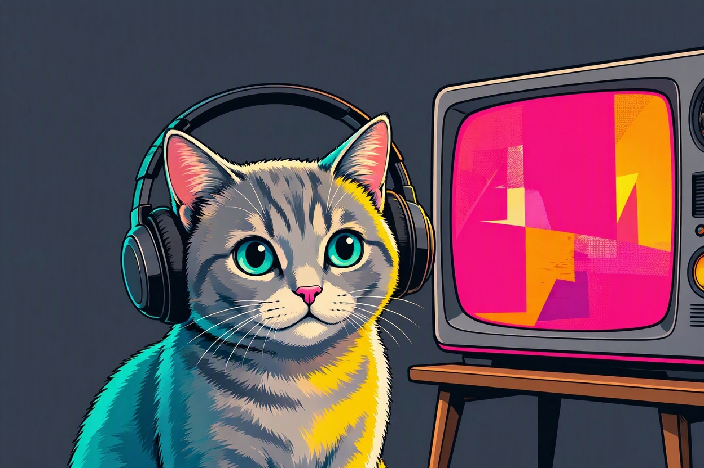

This is a simple multimedia player example using HTML5 audio and video elements.
Below you will find an audio player and a video player demonstration.
This video is a silent video demonstration. The video shows a playful cat interacting with floating bubbles.